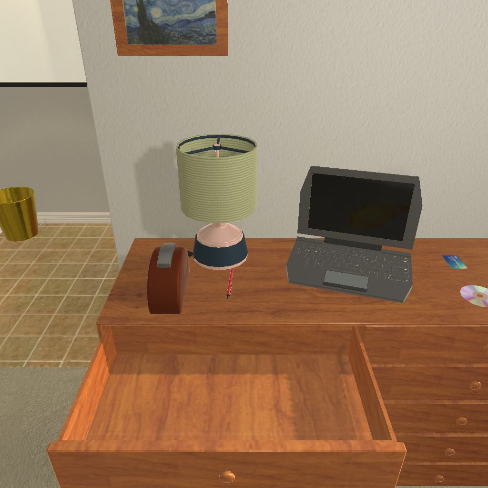

---------------------------------------------------------task: 1---------------------------------------------------------
--------------------------------------------------------------------------------------------------------------------------------------------------------------------
--------------------------------------------------------------------------------------------------------------------------------------------------------------------
Step:--------------------------------------------------------------------------7-------------------------------------------------------------------------------
----------------------------------------
VLM Prompt:
Image1:
**Instruction**
1. Analyze the provided image to identify all visible household objects, focusing on those relevant to the task description "look at alarmclock under the desklamp."
2. Use the analysis of the image and the task hint "The agent must find an object of the desired type, locate and turn on a light source with the desired object in-hand." to answer the question: what is the most reasonable action in the choices for the task description "look at alarmclock under the desklamp"?
4. Decide and write the answer using the template: The answer is: (i): , where i is the real number. If there is no desired object in the image, search every place based on **Initial Observation** to find the object. And if no one is exactly correct, choose a similar answer.
**Initial Observation**
You are in the middle of a room. Looking quickly around you, you can see bed (1), dresser (1), drawer (1-10), garbagecan (1), shelf (1-7)
**Answer Choices**
(1): go to bed 1
(2): go to dresser 1
(3): go to drawer 1
(4): go to drawer 2
(5): go to drawer 4
(6): go to drawer 5
(7): go to garbagecan 1
(8): go to drawer 6
(9): go to drawer 7
(10): go to drawer 8
(11): go to drawer 9
(12): go to drawer 10
(13): go to shelf 1
(14): go to shelf 2
(15): go to shelf 3
(16): go to shelf 4
(17): go to shelf 5
(18): go to shelf 6
(19): go to shelf 7
(20): open drawer 3
(21): close drawer 3
(22): take laptop 1 from drawer 3
(23): take alarmclock 1 from drawer 3
(24): take cd 1 from drawer 3
(25): take creditcard 1 from drawer 3
(26): take pen 1 from drawer 3
(27): take keychain 1 from drawer 3
(28): use desklamp 1
**Answer**
Let's think step by step by following the instructions.
----------------------------------------
----------------------------------------
Original Response:
First, we need to identify all visible household objects relevant to the task description "look at alarmclock under the desklamp." The image shows a desklamp on the dresser and an open drawer (drawer 3) with various objects inside, including an alarmclock (alarmclock 1), which is required for the task.
Next, according to the task hint, the agent must find an object of the desired type (alarmclock), locate and turn on a light source (desklamp) with the desired object in-hand. From the image, we can see that the agent needs to take the alarmclock from the drawer and then use the desklamp to look at it.
Based on the initial observation, there is no need to search other areas like the bed, other drawers, garbage can, or shelves, as the desired objects are visible in the image provided.
Looking at the answer choices, the most reasonable action to perform the task "look at alarmclock under the desklamp" would be to first take the alarmclock from the drawer and then use the desklamp. So the correct sequence of actions would be to take the alarmclock and then use the desklamp.
The answer is: (23): take alarmclock 1 from drawer 3, followed by (28): use desklamp 1.
----------------------------------------
----------------------------------------
>>> Refine Original VLM Response and Get Pure Action: take alarmclock 1 from drawer 3, followed by (28): use desklamp 1
----------------------------------------
-----------------------------------------------------------------
Running time: 10.2074134349823 seconds
Total Money: 0.40279999999999994
-----------------------------------------------------------------
-----------------------------------------------------------------
Text Observation:You pick up the alarmclock 1 from the desklamp 1.
-----------------------------------------------------------------
UNSUCCEED